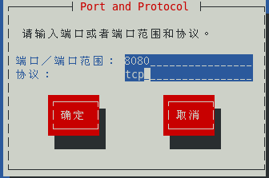
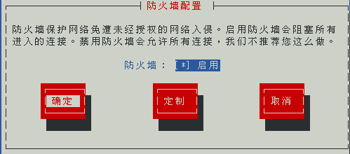
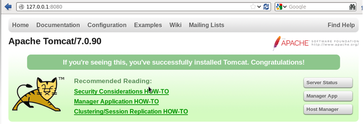

安装Tomcat
Tomcat作为web服务器实现了对servlet和jsp的支持，centos目前不支持yum方式安装。在使用Tomcat之前，确保你已经安装并配置好了jdk，而且jdk的版本要和tomcat匹配
1、从Tomcat官网下载安装包（http://tomcat.apache.org/download-70.cgi），直接解压就可以使用
|
[root@localhost
wj]# tar -xvf tomcat.tar //直接解压
[root@localhost
wj]# ls
1.c
1.c~ apache-tomcat-9.0.10 tomcat.tar
[root@localhost
wj]#
|
2、进入Apache的bin目录，执行startup.sh就可以启动Apache
|
[root@localhost
apache-tomcat-9.0.10]# cd /wj/apache-tomcat-9.0.10//bin/
[root@localhost
bin]# ./startup.sh
Using
CATALINA_BASE: /wj/apache-tomcat-9.0.10
Using
CATALINA_HOME: /wj/apache-tomcat-9.0.10
Using
CATALINA_TMPDIR: /wj/apache-tomcat-9.0.10/temp
Using
JRE_HOME: /usr
Using
CLASSPATH: /wj/apache-tomcat-9.0.10/bin/bootstrap.jar:/wj/apache-tomcat-9.0.10/bin/tomcat-juli.jar
Tomcat started.
|
3、修改防火墙配置，Tomcat默认使用8080端口，需要修改防火墙，开启对8080端口的支持
1)在终端输入命令“setup”，在弹出的框中选择“防火墙”，接着选择“定制”

2)使用空格键选中”https“、“http”，接着选择“转发”

3)选择“添加“

4)添加端口8080，协议tcp，然后确定

5)回到最初的界面，“确定”

6)重启防火墙
|
[root@localhost
~]# service iptables restart
iptables：将链设置为政策
ACCEPT：filter
nat
[确定]
iptables：清除防火墙规则：
[确定]
iptables：正在卸载模块：
[确定]
iptables：应用防火墙规则：
[确定]
[root@localhost
~]#
|
7)重启apache
|
[root@localhost
~]# service httpd restart
停止 httpd：
[确定]
正在启动 httpd：httpd:
Could not reliably determine the server's fully qualified domain name, using
localhost.localdomain for ServerName
[确定]
[root@localhost
~]#
|
4、测试。在浏览器输入https://127.0.0.1：8080，看到如下结果

Copyright@david
zhytwj2018@163.com